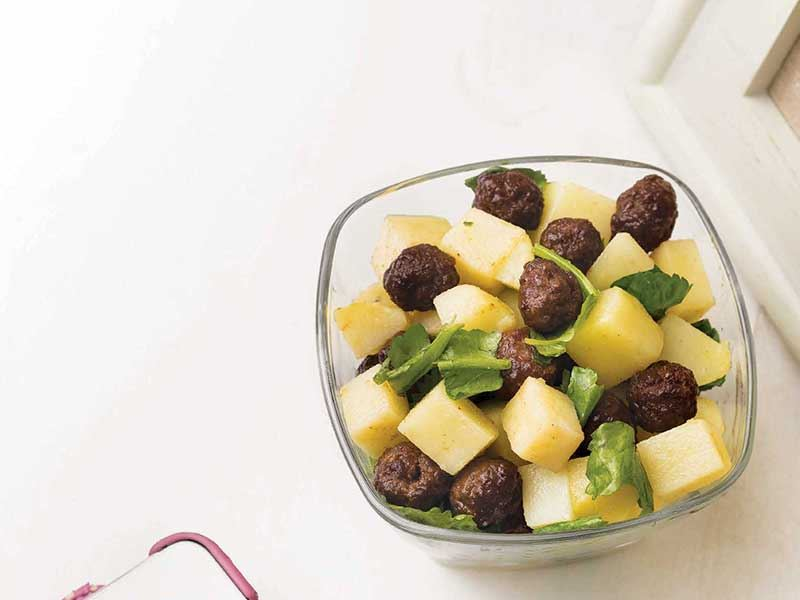

Beyaz peyniri rendeleyerek işe koyulun. Ardından bir karıştırma kabı alın ve içine süzme yoğurdu koyun. Yoğurdun üzerineyse rendelediğiniz beyaz peyniri ekleyin. Sarımsakların kabuğunu soyun ve küçük parçalar şeklinde kesin. Bu parçaları havana yerleştirip üzerine biraz tuz serptikten sonra güzelce dövün ve dövülmüş sarımsakları da yoğurt ve peynirin bulunduğu kaba ekleyin. Ardından bir tava alın ve içine zeytinyağı koyup kızdırın. Cevizleri kızan yağa ekleyip yaklaşık 2 dakika kadar soteleyin ve içine naneleri atın. Nanelerin kokusu çıkmaya başlayınca tavayı ocaktan alın. Nane-ceviz karışımını da karışım kabına alın ve bir çırpıcı kullanarak tüm malzemeleri birbirine karıştırın. Hazırladığınız haydariyi servis tabağına alarak soğuk olarak servis edin. Afiyet olsun.
